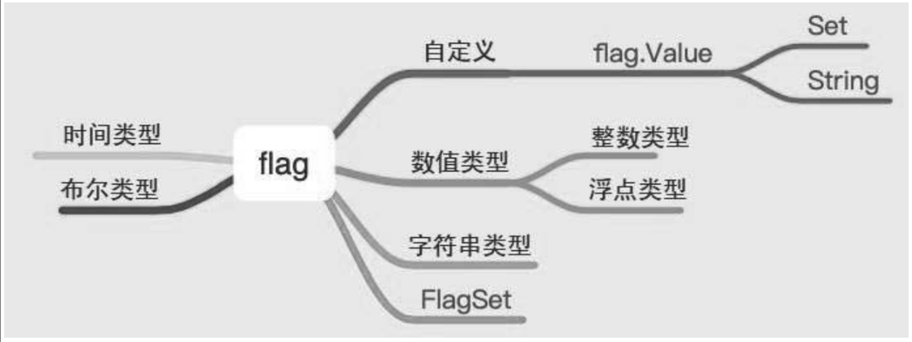

10.13. flag和go-flags¶
10.13.1. 1. flag简介¶
import "flag"
flag包实现了命令行参数的解析。
在日常开发中经常会使用终端命令，特别是使用Linux作为开发环境时，使用到命令行的机会更多，因为几乎所有的服务器都使用Linux操作系统。再者，经常使用到的服务方式都是C/S（客户端/服务器端）的架构，如何和服务器端进行交互呢？
一种方式是服务器端提供RESTful API的形式，以便于用户来操作服务器端的资源；
另一种形式是客户端对服器务端的操作进行封装，提供命令行的形式与服务器端进行交互。比如经常使用的容器服务Docker，用户之所以可以操作镜像和容器，就是因为Docker采用的是C/S架构，启动Docker本地即启动Docker服务，在终端中使用docker命令即可操作服务器端的资源。
在Go语言中支持对命令参数的解析，提供的库是flag，可以采用内置的基本数据类型用于参数的解析，比如整数类型、浮点类型、布尔类型、字符串类型、时间类型等，
有两种不同的方式可用于操作这几种基本数据类型，
一种是先声明变量的形式，
另一种是直接使用指针的形式，
如图
flag库提供的操作
下面查看基本的使用方式：
func FlagUsage() {
var number int
flag.IntVar(&number, "n", 10, "number")
name := flag.String("name", "Go", "name of language")
now := flag.Duration("time", time.Second, "time")
flag.Parse()
flag.PrintDefaults()
fmt.Println(number, *name, *now)
}
flag.IntVar/flag.Float64Var/flag.Int64Var/flag.Uint64Var/flag.UintVar/flag.BoolVar/flag.StringVar/flag.DurationVar：适用于声明变量的形式。
flag.Int/flag.Float/flag.Int64/flag.Uint64/flag.Uint/flag.Bool/flag.String/flag.Duration：适用于将值通过指针形式进行赋值。
区分这两种方式可以直接从方法的名称入手，带Var的关键字需要赋予指定的变量。
这两种方式可以指定接收命令的短参数、默认值以及帮助提示。必须使用flag.Parse才能正确地解析命令行参数。
$ go run main.go -n 100 -name python -time 1h10m
-n int
number (default 10)
-name string
name of language (default "Go")
-time duration
time (default 1s)
100 python 1h10m0s
也能采用=的形式进行
$ go run main.go -n=1000 -name=golang -time 1h20m30s
-n int
number (default 10)
-name string
name of language (default "Go")
-time duration
time (default 1s)
1000 golang 1h20m30s
默认对整数类型、浮点类型、字符串类型、布尔类型、时间类型进行操作，即将从命令行终端中获取到的值转变为整数类型、浮点类型、字符串类型、布尔类型和时间类型。如果想把从命令行终端获取的值转变为自定义类型，比如将传入的字符串转变为切片、数组、自定义类型，如何实现呢？
type Value interface {
String() string
Set(string) error
}
可以看出要实现自定义的类型解析，需要实现String方法和Set方法。
Set方法的作用是将接收的值转换成自定义类型，所以需要使用指针方法；
String方法是为了实现格式化输出。
1.1 示例¶
自定义类型
package main
import (
"flag"
"fmt"
"strconv"
"strings"
)
type Numbers struct {
Num []int
}
func (n *Numbers) Set(value string) error {
sList := strings.Split(value, "|")
var num []int
for _, i := range sList {
in, _ := strconv.Atoi(i)
num = append(num, in)
}
n.Num = num
return nil
}
func (n *Numbers) String() string {
return fmt.Sprintf("%#v", n.Num)
}
func FlagSpecial() {
var n Numbers
flag.Var(&n, "n", "number to parse")
flag.Parse()
// flag.PrintDefaults()
fmt.Println(n.Num)
}
func main() {
FlagSpecial()
}
自定义结构体Numbers。
实现Set和String方法。
具体是将“|”分隔符分隔的字符串转化为Numbers的属性。
$ go run main.go -n "1|2|3"
-n value
number to parse
[1 2 3]
1.2 示例¶
package main
import (
"flag"
"fmt"
)
func main() {
var confPath string
var port int
var b bool
flag.StringVar(&confPath, "conf", "", "input config path.")
flag.IntVar(&port, "p", 8000, "")
flag.BoolVar(&b, "b", false, "input bool.")
//注册
flag.Parse()
fmt.Println("configPath: ", confPath)
fmt.Println("port: ", port)
fmt.Println("b: ", b)
}
$ go build -o bin/flag.exe github.com/flag_project/src/go_dev/args
$ flag.exe -conf "/home/config" -p 8080 -b true
configPath: /home/config
port: 8080
b: true
1.3 示例¶
Mysql接收参数的例子
package main
import (
"flag"
"fmt"
)
func main() {
var Username string
var Password string
var port int
var DBname string
flag.StringVar(&Username,"u","","mysql User")
flag.StringVar(&Password,"p","","mysql Password")
flag.IntVar(&port,"port",3306,"MySQL port default 3306")
flag.StringVar(&DBname,"db","","MySQL database name")
//注册
flag.Parse()
fmt.Println("MySQL Username: ",Username)
fmt.Println("MySQL Password: ",Password)
fmt.Println("MySQL Port: ",port)
fmt.Println("MySQL DBName: ",DBname)
if Username != "root" {
fmt.Println("please input mysql user root!")
}
}
D:\go_studay\go_path\src\github.com\flag_project>go build -o bin/mysql.exe github.com/flag_project/src/go_dev/mysqlArgs
D:\go_studay\go_path\src\github.com\flag_project\bin>mysql.exe -u root -p admin#123! -db dbweb
MySQL Username: root
MySQL Password: admin#123!
MySQL Port: 3306
MySQL DBName: dbweb
1.4 示例¶
package main
import (
"flag"
"fmt"
"os"
"strconv"
"strings"
)
func usage() {
flag.Usage()
fmt.Printf("\n")
fmt.Printf("Format:\nmooon_ssh -h=host1,host2,... -P=port -u=user -p=password -c=command\n")
fmt.Printf("\n")
fmt.Printf("Example:\nmooon_ssh -h=192.168.31.32 -P=22 -u=root -p='root@2018' -c='whoami'\n")
fmt.Printf("\n")
}
func main() {
var (
g_help = flag.Bool("H", false, "Display a help message and exit")
g_hosts = flag.String("h", "", "Connect to the remote machines on the given hosts separated by comma, can be replaced by environment variable 'H'")
g_port = flag.Int("P", 22, "Specifies the port to connect to on the remote machines, can be replaced by environment variable 'PORT'")
g_user = flag.String("u", "", "Specifies the user to log in as on the remote machines, can be replaced by environment variable 'U'")
g_password = flag.String("p", "", "The password to use when connecting to the remote machines, can be replaced by environment variable 'P'")
g_command = flag.String("c", "", "The command is executed on the remote machines")
)
var hosts, user, password string
var port int
flag.Parse()
// help
if *g_help {
usage()
os.Exit(1)
}
// hosts
if *g_hosts != "" {
hosts = *g_hosts
} else {
s := os.Getenv("H")
if s != "" {
hosts = s
} else {
fmt.Printf("Parameter[\033[1;33m-h\033[m] not set\n\n")
usage()
os.Exit(1)
}
}
// port
s := os.Getenv("PORT")
if s == "" {
port = *g_port
} else {
port_, err := strconv.Atoi(s)
if err != nil {
fmt.Printf("Parameter[\033[1;33m-P\033[m]: invaid port\n\n")
usage()
os.Exit(1)
} else {
port = port_
}
}
// user
if *g_user != "" {
user = *g_user
} else {
s := os.Getenv("U")
if s != "" {
user = s
} else {
fmt.Printf("Parameter[\033[1;33m-u\033[m] not set\n\n")
usage()
os.Exit(1)
}
}
// password
if *g_password != "" {
password = *g_password
} else {
s := os.Getenv("P")
if s != "" {
password = s
} else {
fmt.Printf("Parameter[\033[1;33m-p\033[m] not set\n\n")
usage()
os.Exit(1)
}
}
// command
if *g_command == "" {
fmt.Printf("Parameter[\033[1;33m-c\033[m] not set\n\n")
usage()
os.Exit(1)
}
host_array := strings.Split(hosts, ",")
for _, host := range host_array {
ip_port := host + ":" + fmt.Sprintf("%d", port)
fmt.Println(ip_port, user, password)
}
}
1.5 示例¶
package main
import (
"flag"
"fmt"
"log"
)
var (
host string
port string
user string
password string
dbname string
)
func main() {
// 定义参数数组
args := []string{"-mysql.host", "1.2.3.4",
"--mysql.port", "13389",
"-mysql.user", "app_user",
"-mysql.password", "123456",
}
fs := flag.NewFlagSet("mysql", flag.ContinueOnError)
fs.StringVar(&host, "mysql.host", "127.0.0.1", "mysql host")
fs.StringVar(&port, "mysql.port", "3389", "mysql port")
fs.StringVar(&user, "mysql.user", "test", "mysql user")
fs.StringVar(&password, "mysql.password", "nil", "mysql password")
fs.StringVar(&dbname, "mysql.dbname", "app", "mysql database name")
if err := fs.Parse(args); err != nil { // 解析参数
log.Fatalln(err)
}
fmt.Println("mysql host:", host) // mysql host: 1.2.3.4
fmt.Println("mysql port:", port) // mysql port: 13389
fmt.Println("mysql user:", user) // mysql user: app_user
fmt.Println("mysql password:", password) // mysql password: 123456
fmt.Println("mysql dbname:", dbname) // mysql dbname: app
}
NewFlagSet方法有两个参数，第一个参数是程序名称，输出帮助或出错时会显示该信息。第二个参数是解析出错时如何处理，有几个选项：
ContinueOnError：发生错误后继续解析，CommandLine就是使用这个选项；
ExitOnError：出错时调用os.Exit(2)退出程序；
PanicOnError：出错时产生panic。
1.6 示例¶
package main
import (
"flag"
"fmt"
)
var (
intflag *int
boolflag *bool
stringflag *string
)
func init() {
intflag = flag.Int("intflag", 0, "int flag value")
boolflag = flag.Bool("boolflag", false, "bool flag value")
stringflag = flag.String("stringflag", "default", "string flag value")
}
func main() {
flag.Parse()
fmt.Println("int flag:", *intflag)
fmt.Println("bool flag:", *boolflag)
fmt.Println("string flag:", *stringflag)
}
10.13.2. 2. 参考文献¶
Go 每日一库之 flag
10.13.3. 3. go-flags¶
参考文献
10.13.4. 3.小结¶
要实现在终端中输入命令行的方式，可以使用内置库Flag，它提供了整数类型、浮点类型、字符串类型、时间类型等的接收参数，可以自动解析变量并转化为指定的类型，再进行后续的处理。另外，可以自定义解析任意类型的变量，只需要实现Value接口即可。
在后续的开发中还会接触一些优秀的第三方开源库，
比如urfave/cli（https://github.com/urfave/cli）或者cobra（https://github.com/spf13/cobra），
本质上这些开源库都封装了内置库Flag，提供了更为简便的处理方式。